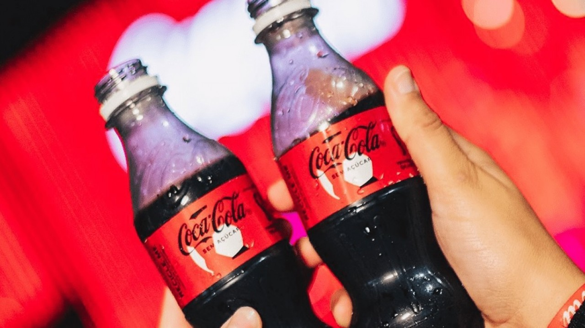

O Aspartame da Coca-zero é prejudicial?

Em julho de 2023, a Organização Mundial da Saúde (OMS) e o Comitê Conjunto de Especialistas em Aditivos Alimentares (JECFA) revisaram a segurança do aspartame, adoçante usado em produtos como Coca-Cola Zero. Apesar da Agência Internacional de Pesquisa sobre o Câncer (IARC) tê-lo classificado como "possivelmente carcinogênico" — uma categoria que também inclui coisas como aloe vera e vegetais em conserva — o JECFA reafirmou que o consumo do aspartame é seguro dentro da dose diária aceitável de 40 mg/kg de peso corporal. Isso significa que uma pessoa teria que consumir quantidades muito altas para atingir um nível preocupante. A Coca-Cola, em resposta, destacou seu compromisso com a ciência e disse que continuará usando o adoçante em seus produtos. Assim, evidências científicas mostram que o aspartame, quando consumido moderadamente, não representa risco à saúde.